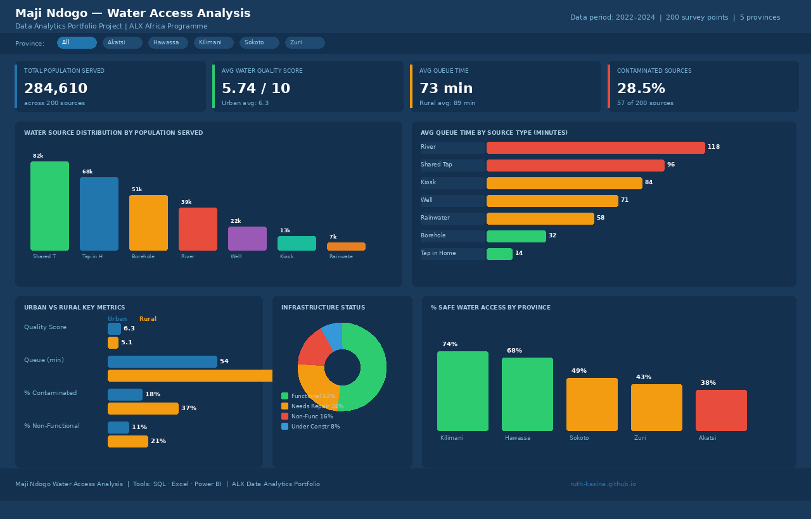

Turning data into
decisions that matter.
I'm a data analyst passionate about uncovering insights from complex datasets and communicating them in ways that drive real business outcomes.
Data analyst with an eye for the story behind the numbers.
I completed the ALX Data Analytics program where I developed hands-on skills in data cleaning, exploratory analysis, and building dashboards that communicate insights clearly to both technical and non-technical audiences.
I'm especially drawn to projects involving business intelligence and helping organisations make confident, evidence-based decisions.
Let's work together →Projects
Maji Ndogo Water Access Analysis
An end-to-end data analytics project focused on assessing water accessibility in Maji Ndogo. The analysis involved data cleaning, exploration, and visualization to uncover key patterns and provide actionable insights for improving water distribution and access.

Customer Segmentation Analysis
Analysed customer purchase behaviour across 3 years of transaction data. Identified 4 distinct customer segments and recommended targeted retention strategies.
↗HR Attrition Report
Investigated employee turnover trends using HR data. Identified key drivers of attrition and presented findings to a simulated leadership audience.
↗Construction Cost & Resource Analysis
A data analytics project analysing construction costs, material usage, and project efficiency to help contractors optimise resource allocation, reduce costs, and improve project planning.
What I bring to the table
Data tools
Analytics skills
Soft skills
Let's work
together.
Open to freelance projects, full-time roles, and collaborations.